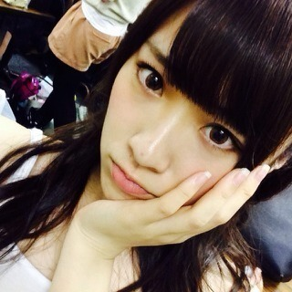

2013/1030Wed（´-`）.｡oO(か ずみん×233
.
「"BAD GIRLS J"乃木坂46
スペシャルナイト」
に出れなくなってしまって
本当に申し訳ありませんでした...
.
.
ブログでも書いてた咳が
また気管支炎になってしまって。
ここ最近夜も咳で寝れなくて
VAMPSさんのフェスでも
実は咳で上手く歌えず...
.
あと薬の副作用での手足の震えが
大変でした。
昨日のミュージックフェアも
ろってぃに変わってもらいました(´;ω;`)
ごめんね...
.
.
.
ただ本当に咳だけで
熱も喉の赤みもなく、元気です！！
昨日、今日とお休みをいただいたら
だいぶ...治りました^ ^
心配かけてしまってすみません(>_<)
.
.
毎年1月〜4月は気管支炎に
悩まされていて、
去年もみんなに迷惑を
かけてしまいました(T ^ T)
.
今年はこの時期から...
.
あぁ、昔からガタイがいいくせに
身体が弱いんです(T_T)泣
本当申し訳ない...
.
.
早く治さないと！！！
もう少しで治りそうだから！
.
.
皆さん、本当にごめんなさい。
.
頑張るぞ〜〜〜(ﾉ;ω;)ﾉ
ポジティブsay!

いつだかの写真。
2013/10/30 22:24
コメント(739)
応援してます
かずみん大丈夫？（ ; ; ）
かずみん、体調大丈夫ですかー？
早く良くなるとよいね！！
早く良くなるとよいね！！
かずみん大丈夫かぁー(´・_・`)
あんまり無理しないで休みなさいよー(´･ε･̥ˋ๑)
因みに俺は今鼻づまりが酷くて辛いです_(┐「ε:)_
かずみんこんばんはー！
体調大丈夫ですかー？
ぴかぽんさんも心配してるよー(^^;;
お大事に！！
おやすー
か、か、かわいいいいい
ばっがーるよかったよー
ヾ(＠⌒ー⌒＠)ノ
夢で会おうぜアディオス
(*´ω｀*)(*´ω｀*)(*´ω｀*)
ばっがーるよかったよー
ヾ(＠⌒ー⌒＠)ノ
夢で会おうぜアディオス
(*´ω｀*)(*´ω｀*)(*´ω｀*)
かずみん！二回目！
俺もうちょいで誕生日なんだ！
11/13←祝ってな〜（≧∇≦）
俺もうちょいで誕生日なんだ！
11/13←祝ってな〜（≧∇≦）
僕も最近、喘息ぎみ
お大事にね！
お大事にね！
おーーい！
平気かー！
心配だよーー！
武道館とかもあるし無理しないでね！
また元気な姿みせてねー＼(^o^)／
平気かー！
心配だよーー！
武道館とかもあるし無理しないでね！
また元気な姿みせてねー＼(^o^)／
かずみん＼( 'ω')／ウオオオオオオアアアアアアアアアアアアアーーーーーッッッッ！！！！！
かずみんお大事に。・°°・(＞_＜)・°°・。
ゆっくり治してくださいね。また元気なかずみんを待ってます(*´ω｀*)
かすみん、焦りは禁物。しっかり治してね。
みんな待ってるから安心してください。
イエーイ＼(^o^)／アメイジング
みんな待ってるから安心してください。
イエーイ＼(^o^)／アメイジング
かずみん心配したぞー＼(^o^)／
7thシングル楽しみや☆*:.｡. o(≧▽≦)o .｡.:*☆
7thシングル楽しみや☆*:.｡. o(≧▽≦)o .｡.:*☆
お大事に(*≧∀≦*)
かわゆ(๑¯ー¯๑)
頑張ってい┗(^o^┗) (┛^o^)┛
大丈夫なん？
ほんま無理したらあかんでΣ（ﾟдﾟlll）
ほんま無理したらあかんでΣ（ﾟдﾟlll）
お大事に！
早くよくなることを祈ってます
ポジティブ！！
かずみん大丈夫？(*_*)
無理しないでしっかり休みなよ(>_<)
何もしてあげられないのが残念だけど、早期の回復を祈ってます(＞人＜;)
早く元気な姿見せてね( ´ ▽ ` )ﾉ
復活ブログまってるよ(^_−)−☆
大好き♡
無理しないでしっかり休みなよ(>_<)
何もしてあげられないのが残念だけど、早期の回復を祈ってます(＞人＜;)
早く元気な姿見せてね( ´ ▽ ` )ﾉ
復活ブログまってるよ(^_−)−☆
大好き♡
大丈夫かあああああああ(´；ω；｀)
咳だけっていってもきついものはきついよね
無理せず休んで欲しいけど
今の時期そうもいかないのかな…？
頑張れとしか言えないのが不甲斐ないよ(´･ω･`)
早く良くなることを祈ってる！！！
なす
お大事に!!
体調が一番だからo(^o^)o
気にしなくて大丈夫だから
早く万全に戻るといいな◎
体調が一番だからo(^o^)o
気にしなくて大丈夫だから
早く万全に戻るといいな◎
お大事にね(´;ω;`)
ポジティブsay♪♪
写真かわいい♡
お大事に！
アメイジング＼(^^)／
バケラッタぁぁぁ
アメイジング＼(^^)／
バケラッタぁぁぁ
大丈夫(;_;)????
お大事に(;_;)
最後の写真、なんかかりんちゃんににてるー笑
かずみん、大丈夫？
見れないのはちょっと残念だけど、ちゃんと治してまた頑張って！
かずみんのことずっと応援してます( ☆∀☆)
見れないのはちょっと残念だけど、ちゃんと治してまた頑張って！
かずみんのことずっと応援してます( ☆∀☆)
ぶり返さないようにちゃんと治してね！
ふぁいとー！
かずみんお疲れ様です！
体調大丈夫かな？心配です。
ゆっくり休んで治して下さい！！
早く治るように祈ってます(o^^o)
今日はこの辺で(o^^o)
おやすみなさいm(_ _)m
体調大丈夫かな？心配です。
ゆっくり休んで治して下さい！！
早く治るように祈ってます(o^^o)
今日はこの辺で(o^^o)
おやすみなさいm(_ _)m
おつかれさまです(￣▽￣)
かわいそーーーかずみん、、
休んでるうちに新ネタでも考えてみたら!??
まってまーーーーす
休んでるうちに新ネタでも考えてみたら!??
まってまーーーーす
早く治してね！
元気な姿見たいよ！
元気な姿見たいよ！
かずみーーーーーん!!!!!!!!!!
ふぉー♡
ふぉー♡
こんばんは、かずみん。
１日でも早く完治する事願っています！
ポジティブ Say!
１日でも早く完治する事願っています！
ポジティブ Say!
こんばんは
かずみん
大丈夫？？
無理しないでゆっくり治してや
復帰まってます(￣^￣)ゞ
伸ばし棒が2つのゆーーち
かずみーん、大丈夫ですか？
確かに前もあったよね。で、かずみんは元気なくなっちゃった気がしたな・・・
焦らず、じっくりと治していこうね
今度、喉が回復したら百恵ちゃんの『いい日旅立ち』でもリクエストしよーっと
じゃあね、バケラッタ ”
”
確かに前もあったよね。で、かずみんは元気なくなっちゃった気がしたな・・・
焦らず、じっくりと治していこうね
今度、喉が回復したら百恵ちゃんの『いい日旅立ち』でもリクエストしよーっと
じゃあね、バケラッタ
かずみん大丈夫？(´・ω・｀)
無理しすぎないでね
かずみんの元気が乃木坂みんなの元気にも
直結してるからねヾ(＠⌒ー⌒＠)ノ
ほなら、ばいちゃ
かわいー
新曲バケラッタだったねww
新曲バケラッタだったねww
バケラッタ!!!!
大丈夫ですか？
無理しないで下さいね!!!!
ポジティブ say!!!!＼(^o^)／
大丈夫ですか？
無理しないで下さいね!!!!
ポジティブ say!!!!＼(^o^)／
気管支炎かぁ…
呼吸器系の病気って辛いよね（ ＴДＴ）
早くよくなるように祈ってるよ！
焦らずじっくり治してね！
呼吸器系の病気って辛いよね（ ＴДＴ）
早くよくなるように祈ってるよ！
焦らずじっくり治してね！
かずみんおつかれさまー
ずっとせきでるの辛いよね(´・ω・｀)
ぜんぜんねれないしね..
あたしも気管支喘息あるからわかる(>_<)
でも良くなったみたいで安心したー＼(^^)／
いつだかのかずみんきゃわ〜\(//∇//)\
ずっとせきでるの辛いよね(´・ω・｀)
ぜんぜんねれないしね..
あたしも気管支喘息あるからわかる(>_<)
でも良くなったみたいで安心したー＼(^^)／
いつだかのかずみんきゃわ〜\(//∇//)\
大丈夫？（ ; ; ）
ゆっくり休んでください。お大事に（ ; ; ）
ゆっくり休んでください。お大事に（ ; ; ）
体は資本です!!
お大事に、ゆっくり休んでくださいm(_ _)m
お大事に、ゆっくり休んでくださいm(_ _)m
がんばってね♪かずみん★
かずみん♬
おいーっす！
ひろあん☆だよ((*´∀｀*))
かずみん、大丈夫なの？
あんまり無理しないでね(；ω；)
ポジティブsay！
乃木坂のメンバー、ファンがついてるよ！
じゃあ、またコメントするね！(^o^)/
un！deux！ひろあん☆
おいーっす！
ひろあん☆だよ((*´∀｀*))
かずみん、大丈夫なの？
あんまり無理しないでね(；ω；)
ポジティブsay！
乃木坂のメンバー、ファンがついてるよ！
じゃあ、またコメントするね！(^o^)/
un！deux！ひろあん☆
この一実さんまだ髪の色が真っ黒だね。笑
お大事にしてください！
かずみんさ～ん(>_<)
ひどくなくて
よかったです(^_^;)
ゆっくり治して
元気な姿見せて下さい
ひどくなくて
よかったです(^_^;)
ゆっくり治して
元気な姿見せて下さい
かずみさん大丈夫？無理しないで。
早くよくなれ。
心配です。早く会いたいです。
早くよくなれ。
心配です。早く会いたいです。
あんまり無理しないでねーヾ(･ω･`；)ﾉ
早く良くなりますように！
早く良くなりますように！
初コメです(^^)
気管支炎なのか(;_;)大丈夫?
今日出れなかったのは残念だったかもしれないけど、今後のためにもゆっくり確実に治してね!!
また元気になって力強い歌声聞かせてね!!応援してます♪
ポジティブ＼(^o^)／
気管支炎なのか(;_;)大丈夫?
今日出れなかったのは残念だったかもしれないけど、今後のためにもゆっくり確実に治してね!!
また元気になって力強い歌声聞かせてね!!応援してます♪
ポジティブ＼(^o^)／


おつーーー( ｰ`дｰ´)ｷﾘｯ